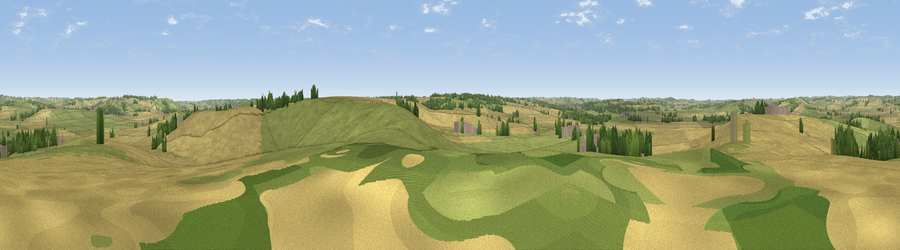

Viewpoint near Sutton Bassett
#26133 in England · top 21% of its area beats it · near Sutton Bassett · path 213 mWhere it is
The exact computed spot (SP 77675 90625). Click the marker for map links.
Public access: the nearest public right of way is about 213 m away — the final stretch may cross private land. Computed from Natural England's CRoW access layer and OpenStreetMap rights of way — not the legal definitive map. Always verify locally.
The view, rendered

A 360° render of this exact spot computed from the terrain model, tree cover and land cover — summer colours, afternoon light, calibrated against photographs of famous viewpoints. Real trees, hedges and buildings will differ in detail.
The panorama
Grey silhouette: terrain skyline in each direction (720 bearings, Earth curvature and refraction included). Dashed green: skyline with trees (+15 m) and buildings (+8 m) as obstacles. Blue strip: how far the ground is visible on each bearing.
Where the view opens
Wedge length = distance to the farthest visible ground on that bearing (vegetation-aware). Rings at 10, 25 and 50 km.
What fills the view
50% grassland · 43% cropland · 5% woodland · 2% built-up
Angular shares of the visible panorama (visual magnitude), not map area. Landscape diversity 0.40 (0–1 Shannon).
Key numbers
More beautiful places nearby
The staircase of upgrades: each row has a higher view potential than everything closer. Driving times are estimates from straight-line distance, calibrated against real road routing — check an actual route before setting out.
| Place | Direction | Drive | Score |
|---|---|---|---|
| Sutton Bassett Hill | SE · 1 km | ~3 min | 45.5 |
| Slawston Hill | N · 4 km | ~8 min | 45.8 |
| Viewpoint near Blaston | NE · 4 km | ~10 min | 47.2 |
| Viewpoint near East Norton | N · 9 km | ~18 min | 49.6 |
| Robin-a-Tiptoe Hill | N · 14 km | ~25 min | 54.1 |
| Whatborough Hill | N · 15 km | ~27 min | 55.9 |
| Viewpoint near Billesdon | NNW · 15 km | ~27 min | 56.8 |
| Viewpoint near Cold Newton | NNW · 16 km | ~28 min | 57.3 |
52.50800, -0.85699 · source: screening · position refined by local search. Computed location — check access rights before visiting.